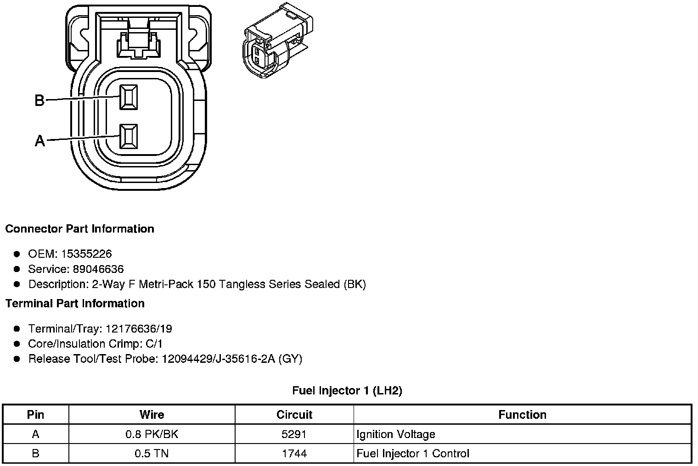
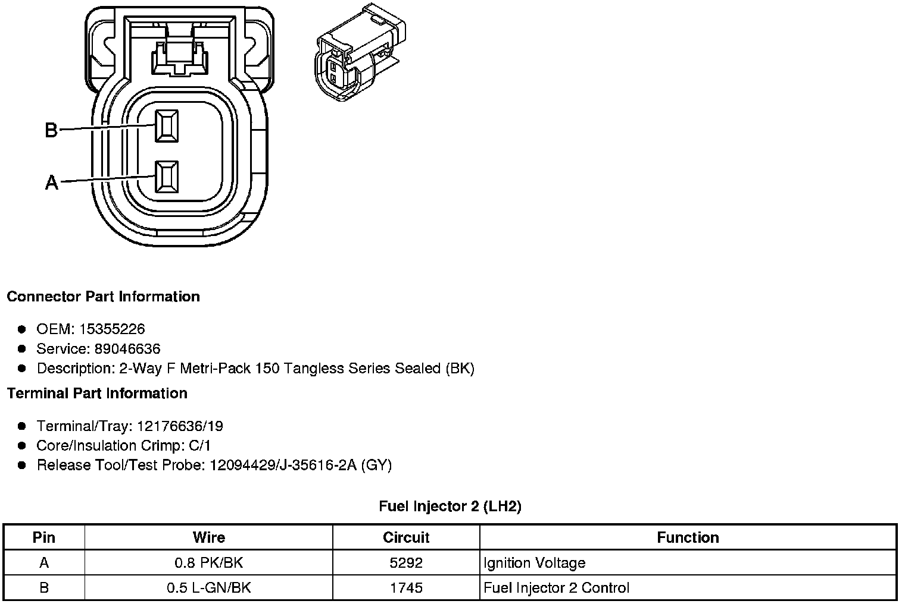
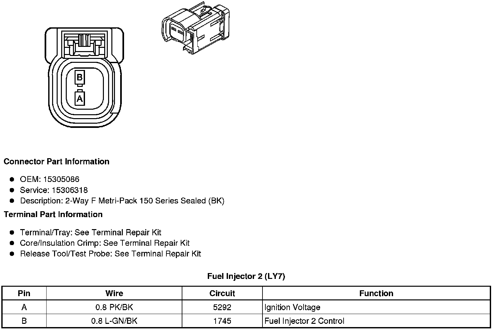
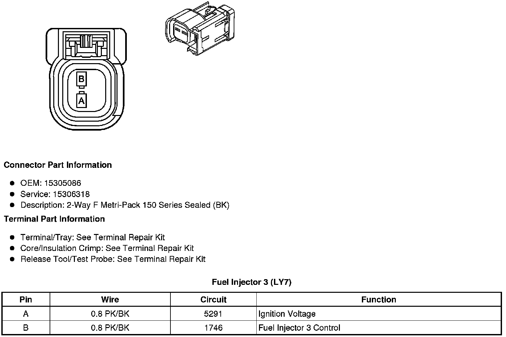

Connector Views
Component Connector End Views
Fuel Injector 1 (LH2 - Gas, 8 Cylinder, 4.6L, SFI, V8, DOHC, HO)

Fuel Injector 1 (LY7 - Gas, 6 Cylinder, 3.6L, SFI, V6)
Fuel Injector 2 (LH2 - Gas, 8 Cylinder, 4.6L, SFI, V8, DOHC, HO)

Fuel Injector 2 (LY7 - Gas, 6 Cylinder, 3.6L, SFI, V6)

Fuel Injector 3 (LH2 - Gas, 8 Cylinder, 4.6L, SFI, V8, DOHC, HO)
Fuel Injector 3 (LY7 - Gas, 6 Cylinder, 3.6L, SFI, V6)

Fuel Injector 4 (LH2 - Gas, 8 Cylinder, 4.6L, SFI, V8, DOHC, HO)
Fuel Injector 4 (LY7 - Gas, 6 Cylinder, 3.6L, SFI, V6)
Fuel Injector 5 (LH2 - Gas, 8 Cylinder, 4.6L, SFI, V8, DOHC, HO)
Fuel Injector 5 (LY7 - Gas, 6 Cylinder, 3.6L, SFI, V6)
Fuel Injector 6 (LH2 - Gas, 8 Cylinder, 4.6L, SFI, V8, DOHC, HO)
Fuel Injector 6 (LY7 - Gas, 6 Cylinder, 3.6L, SFI, V6)
Fuel Injector 7 (LH2 - Gas, 8 Cylinder, 4.6L, SFI, V8, DOHC, HO)
Fuel Injector 8 (LH2 - Gas, 8 Cylinder, 4.6L, SFI, V8, DOHC, HO)